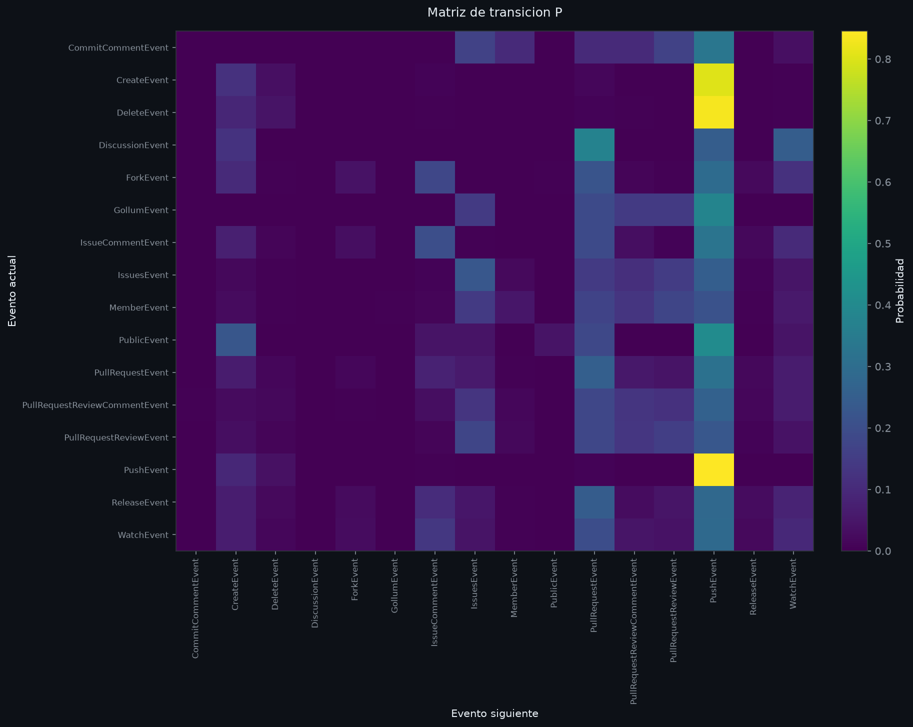
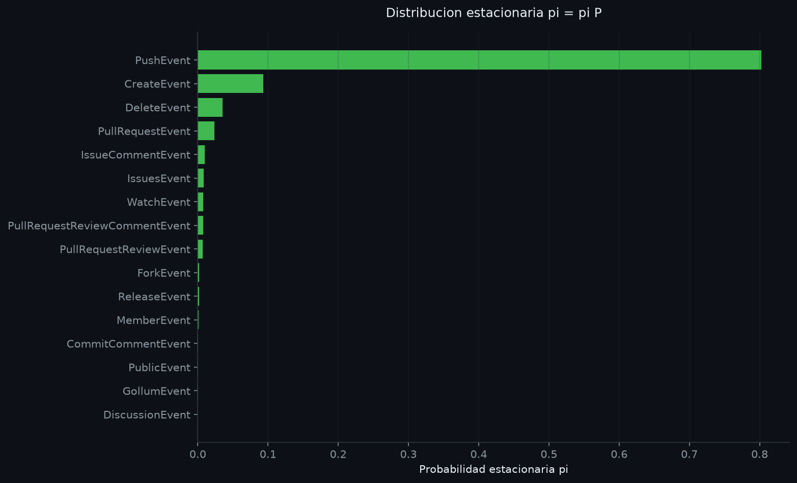
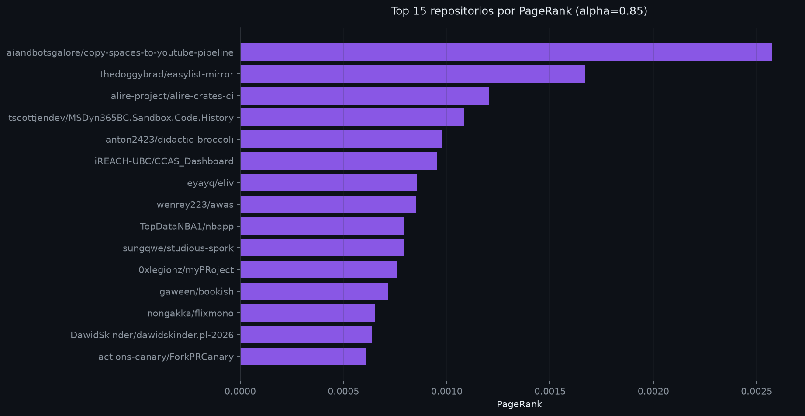

Ritmo de la hora
Eventos por minuto, 12:00–12:59 UTC. Cada punto es un minuto real.
La interfaz reúne dos escalas complementarias: la microescala de una hora (10 de marzo de 2026, 12:00 UTC) con cadenas de Markov y PageRank, y la macroescala de 168 horas con un modelo SARIMA. Todo se lee desde resultados precalculados; no se ejecuta Python en el navegador.
Tres lecturas rápidas para entrar al detalle de cada capítulo.
La secuencia cronológica de tipos de evento define una cadena de 16 estados. La matriz P resume qué evento tiende a seguir a cada evento.
| Origen | Destino | P | Conteo |
|---|
Las figuras originales del capítulo, generadas con Matplotlib y listas para el informe.


Cada usuario genera un camino entre repositorios consecutivos. PageRank (α = 0.85) mide la centralidad de tránsito dentro de esa red dirigida y ponderada.
| # | Repositorio | PageRank |
|---|
El Top 15 también queda disponible como figura estática para el informe.

168 horas continuas de actividad global de GitHub y un modelo SARIMA(1,1,1)(0,1,1)24 con deriva para pronosticar las últimas 24 horas.
| Parámetro | Coeficiente | Error est. | p-valor |
|---|
| Modelo | MAE | RMSE | MAPE | MASE |
|---|
| Serie | ADF p | KPSS p | Lectura |
|---|
Siete figuras del capítulo: serie, perfil horario, STL, diferenciaciones, ACF/PACF, residuos y pronóstico.